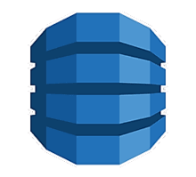

OLAP
Redshift
- Runs on Postgres
- Traditonal ANSI SQL data warehouse solution
- SQL query tool required (ODBC, JDBC)
- Supports an Athena-like S3 option (Spectrum)
- Instance pricing, 3 year leases recommended
- Data is typically loaded via the AWS ETL tool via S3
Elastic MapReduce (EMR)
- Elastic scale-out solution for Hadoop-based applications
- Runs Hadoop, Spark, HBase, or Presto
- Uses a Hive instance or Glue for the metadata repository
- Uses an HDFS instance for storage
- Can leverage spot pricing
- Three node types: master, core, and task
- "Bootstrap Action" feature allows custom software overlays
Athena
- Presto PaaS solution
- Uses HiveDDL and ANSI SQL
- Pricing is $5/TB scanned
- Limited AZs as of 2018
- Useful for ad-hoc queries, result sets are written to S3
- Supports ODBC, JDBC, and a REST API for access
OLTP
RDS
- Basic template service for SQL-based OLTP
- Supports on-demand or reserved pricing for instances
- Supports MySQL, MariaDB, Postres, SQL*Server, and Oracle (as of 2018)
Aurora
- High availability RDBS if you can leverage Postgres or MySQL
- Automatic replication across 3 AZs

DynamoDB
- NoSQL option based on MongoDB
Neptune
- Graph database (SPARQL)
- Probably uses Apache Jena (RDF4J)